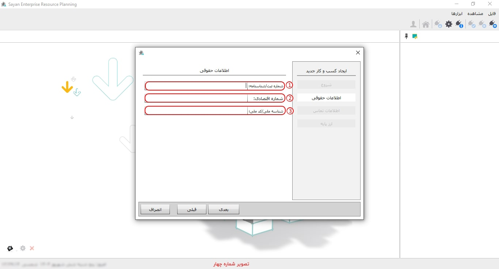
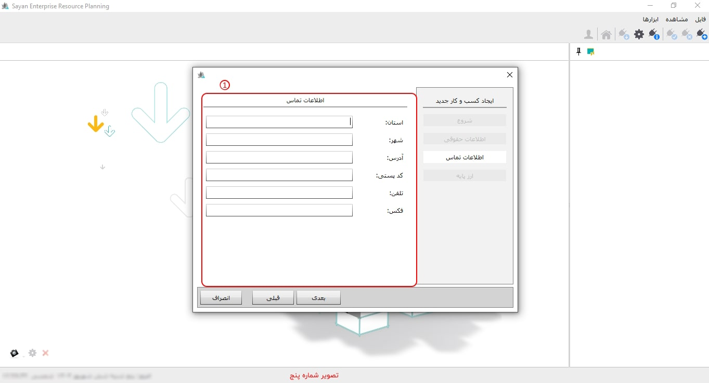
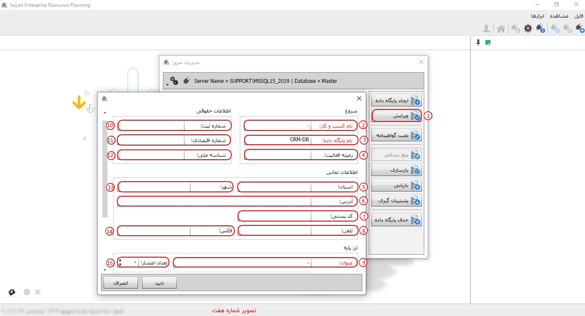
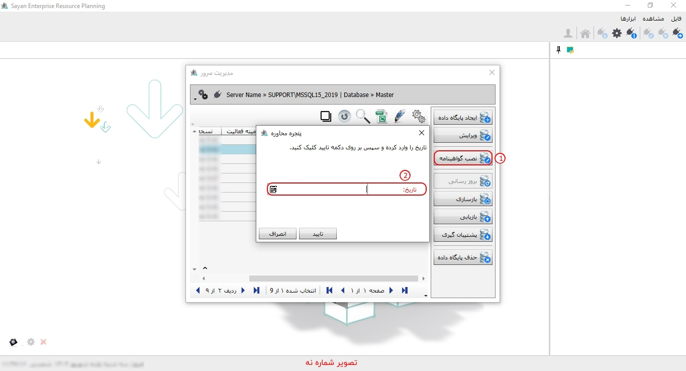
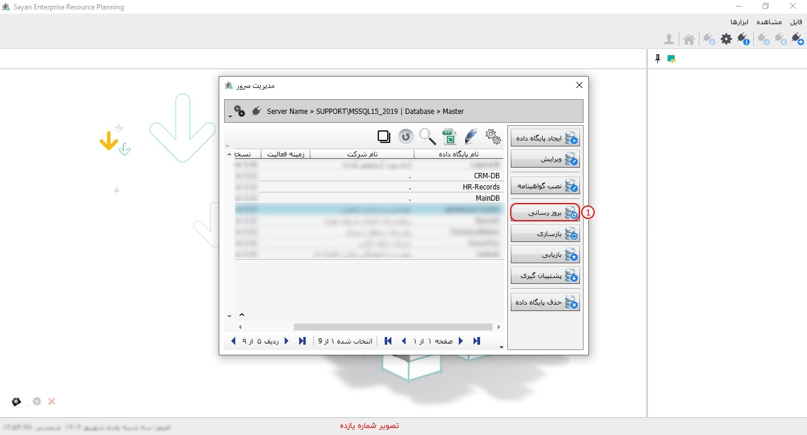
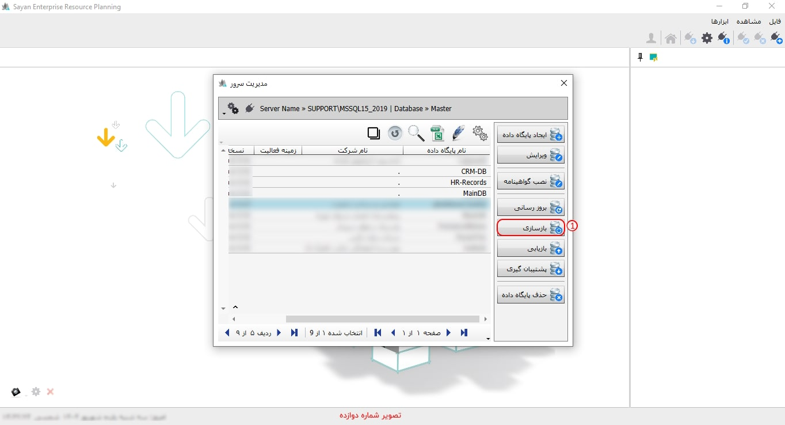

امکان مدیریت سرور از طرق مختلفی در دسترس می باشد هنگامی که نرم افزار سایان را اجرا می کنید مطابق تصویر زیر صفحه ای با دو تب مشاهده می کنید که تب دوم آن تنظیمات و ارتباط با سرور است :

برای ادامه مطلب به تصویر شماره دو مراجعه نمایید.
-کلمه عبور(کادر شماره یک):
برای ادامه مطلب به تصویر شماره سه مراجعه نمایید.

-ایجاد پایگاه داده(کادر شماره یک):
-کادر شماره دو:
برای ادامه مطلب به تصویر شماره چهار مراجعه نمایید.

-نام و کسب کار(کادر شماره یک):
-نام پایگاه داده(کادر شماره دو):
-نکته:
برای ادامه مطلب به تصویر شماره پنج مراجعه نمایید.

-عنوان(کادر شماره یک):
نکته:
برای ادامه مطلب به تصویر شماره شش مراجعه نمایید.

-ویرایش (کادر شماره یک):
برای ادامه مطلب به تصویر شماره هفت مراجعه نمایید.

-کادر شماره ریک:
برای ادامه مطلب به تصویر شماره هشت مراجعه نمایید.
-نصب گواهینامه(کادر شماره یک):
برای ادامه مطلب به تصویر شماره نه مراجعه نمایید.

-بروز رسانی(کادر شماره یک):
نکته:
برای ادامه مطلب به تصویر شماره ده مراجعه نمایید.

-بازسازی(کادر شماره یک):
نکته:
برای ادامه مطلب به تصویر شماره یازده مراجعه نمایید.

-بازیابی(کادر شماره یک):
برای ادامه مطلب به تصویر شماره دوزاره مراجعه نماید.

-پشتیبان گیری (کادر شماره یک):
برای ادامه مطلب به تصویر شماره سیزده مراجعه نماید.

-حذف پایگاه داده (کادر شماره یک):